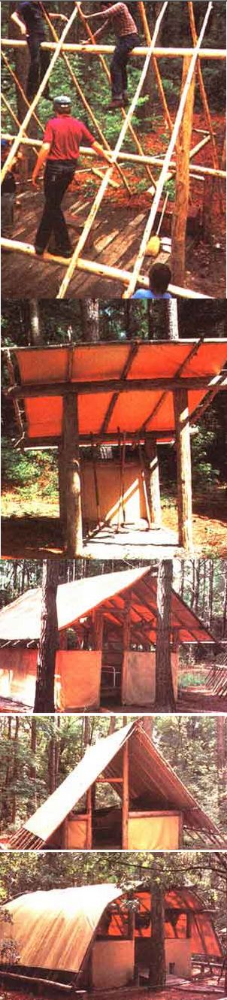
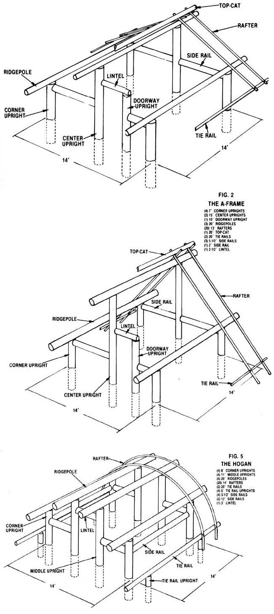

Build Yourself A Pole Shelter
Got your own land? Live in a pole shelter while you build your homestead.
By Dave Brock
March/April 1984
No doubt about it, prospective homesteaders have a passel of problems to overcome! After all, most would-be back-to-the-landers begin without any land to go back to, and must start out by finding a suitable plot to purchase. Then, unless the property includes usable buildings, the next step is to construct a house. Between the acquisition of land and the building of a home may lie years in which money, materials and skills are patiently accumulated, while the homesteaders struggle to work and pay rent in some other location.
But if you have access to a good woodlot (with luck, your own) and if you're willing to tackle a little hard work and to rough it for a while, it's possible to link up with "the good life" by putting together an inexpensive, yet attractive, pole shelter to serve as temporary lodging until you can afford to build a permanent home. Furthermore, you can do so with a few hand or power tools (you'll need wood chisels, an ax, a good bow saw, hand drill, draw blade, ruler, and posthole digger to get under ways some very basic building skills (such as measuring, sawing, notching logs, drilling and nailing), and a friend or two to help lift poles into place, attach siding, and so forth.
Time-tested Shelters
Now I'm not saying that constructing such shelters is exactly easy, but I do know it can be done - because I've been building them for two years, with children for my work crew. As an outdoor instructor for a year-round camping program, I teach youngsters many aspects of wilderness living, including how to design and build their own shelters. In order for each camper to have an opportunity to put up at least one such structure during his or her camp stay, we intentionally design our shelters to last only three to five years. However, in the past fifteen years our school has found that these so-called temporary structures hold up pretty darned well, under conditions ranging from Florida hurricanes to heavy Vermont snows!
Designs nd Decisions
At camp, we utilize the basic designs listed below, each of which presents a different challenge to the student builder.
The Forester (see Fig. 1). (Find all photos in the Image Gallery): This familiar design, consisting of a centered roofline that breaks away from the peak on both sides, has been perhaps the most widely used housing design in history. (In fact, early pioneers and mountain men relied on the similar, more mobile "wall tent" as they explored the great frontier.) The Forester is probably the most fundamental multipurpose shelter available.
The A-Frame (see Fig. 2): When it comes to looks, this abode is my favorite. As the name implies, the rafters are arranged in an A-shape along both sides of a centered ridgepole. When the interior is unmodified, heat rises into the unused peak, but the addition of a lowered ceiling renders the structure more energy-efficient and provides extra space for storage or a sleeping loft.
The Adirondack (see Fig. 3): This design is a variation of the Forester. Its middle uprights and ridgepoles are off-center, positioned about one-third of the way back. The resulting roofline is aesthetically appealing to many builders.
The Baker (see Fig. 4): A close imitation of the primitive lean-to tent, the Baker - with its unbroken, slanted roof - is perhaps the simplest of the five patterns.
The Hogan (see Fig. 5): Fashioned after the stick-and-sod lodges of the Navaho Indians, this round-roof design offers superb protection from wind and rain.
Drawing Up a Plan
Rough sketches are fine when you're working out a design, but when it comes down to the nitty-gritty of construction, you'll be far better off if you have a clear, premeasured plan to follow. I always draw each pattern on graph paper, using a scale of one square to one foot. I also like to divide the sheet into four equal sections, with one section each for the top, front, and side views, while the fourth contains a listing of the poles required.
Thinning the Woodlot
I prefer to make my uprights from conifers measuring about 2-to-3 feet in circumference (8-to-10 inches in diameter). These freshly cut poles should be debarked immediately to prevent their being attacked by wood-boring insects (a good draw knife and some elbow grease should take care of the task). However, any reasonably straight trees, including a wide variety of hardwoods, will serve this purpose. In some localities, in fact, oak and hickory are the only suitable materials, and I've obtained satisfactory results without removing the bark from such trees (sometimes these poles will even sprout a few leaves months after having been cut).
As a matter of good forest management, I always practice selective cutting. I thin out the thick growth areas first, leaving enough saplings to insure erosion control and a future tree crop. Then I strip the boughs from my felled timbers and pile the branches around the stumps, making good shelter for the local wildlife - and at the same time improving the appearance of the "logged off" area.
Once you have all the poles needed to complete your plan, you'll have to haul them to your "second best" building site (the top choice, of course, will be saved for your real future home).
On Uprights, Ridgepoles and Rafters
For the sake of order and convenience, you should tag each pole according to its function. All the designs mentioned require the same basic components: uprights, ridgepoles, side rails, lintels, rafters, and possibly - depending on your plan - a top-cat and tie rails.
The primary support poles are the uprights, which are buried 3 feet deep and tamped firmly in place. For a more enduring shelter, the lower portion of each upright should be treated with an inexpensive creosote solution before it's planted in the ground.
Next, the ridgepoles are laid in notches at the tops of the uprights (and secured with 3/4-inch dowel rods), connecting the main supports on two sides and allowing for a 3-foot eave on each side of the structure. Side rails are then usually notched into the uprights at points about 3 feet above floor level, allowing space for a doorway and lintel piece.
If the snowfall is heavy in your section of the country, the rafters should be spaced about 1 1/2 feet apart on the ridgepoles; otherwise, a 2-foot spread is sufficient. At the camp, we use heavy twine to lash the rafters onto the ridgepoles, but you'll have better - at least, longer-lasting - results if you use long nails.
If your building's roofing is to be made of canvas or vinyl (which has been cut to measure by a local awning company), you'll need a topcat pole - unless you're following the Hogan design. The top-cat is placed snugly into the "V" formed where the rafters cross atop the center ridgepole and will permit fabric to be stretched smoothly over the blunt ends of the rafters. A tie rail can then be secured to the lower ends of the rafters on each side to provide an anchor to which to tie down the flexible covering.
Incidentally, it makes good sense (as well as a strong roof) to top your building with the "tin" salvaged from an old barn or shed, and that recycled roofing will be inexpensive, as well. [EDITORS NOTE: See "A Booming Barn-Board Business" in MOTHER NO. 67, page 22 . . . and the article on page 114 of this issue.] If your heart's set on the rustic appearance of hand-split shingles and if time and skill permit, you can get to work with logs, a froe and a mallet to make your own - but remember that you'll need additional roof supports to nail them to.
The actual siding for your shelter can be made of tarps, slab boards or any other suitable material. (As you can see from the accompanying photographs, we use large tarpaulins for most of our shelters' siding.)
Making It Last
Our buildings are relatively simple structures that are meant to protect us from the elements for a limited period of time. With some modification, however (including such elements as a foundation, hard roofing and siding, and even insulation), they could be made to last for many years. You can alter these basic structures to suit your needs and your resources, but the plain fact is that you can put together a place to live without spending a great deal of money. And, if you're a prospective homesteader, this technique may allow you to put more of your energies toward the important business of making "the good life" a reality.
 DAVE BROCK Ready for use, several freshly cut and skinned pine poles wait to be hauled away. |
 DAVE BROCK (Top to bottom)1. Young campers and their instructor work at putting together an A-frame. 2. A modified Baker-style shelter makes a good pine pole toolshed (note the gravel floor, which provides drainage and keeps the area tidy). 3. A completed A -frame awaits its new occupants. Here the tarp walls have been stretched inside the supporting posts. 4. A sturdy and rather elegant Hogan sports rope-tied fencing and a wooden ramp up to its raised platform floor. 5. A Forester butts its top-cat and ridgepole against a handy tree. |
 DAVE BROCK |